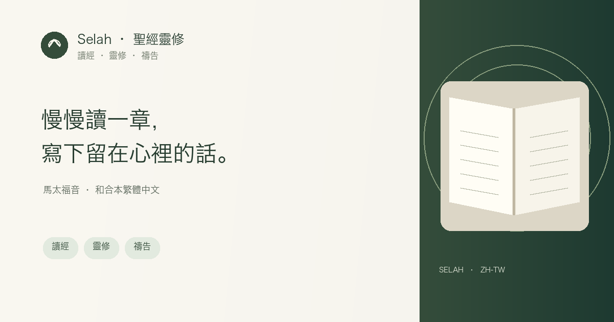

聖經閱讀 · 靈修 · 禱告筆記
慢慢讀一章，把留在心裡的話寫下來。

Selah 是一款免費的聖經靈修應用。你可以從馬太福音開始，一章一章閱讀，在安靜的節奏中寫下自己的觀察、禱告和今天想實踐的一件小事。
在 Selah 裡可以做什麼
- 閱讀馬太福音 28 章，使用1919年和合本繁體中文經文。
- 調整閱讀字型和字級，讓手機或電腦上的經文更易讀。
- 儲存自己的靈修、禱告和複習測驗；連接 BlueCloud 後可在裝置間同步。
- 讀完經文後再看簡短文章導讀，不讓其他內容打斷讀經。
- 分享經文連結時，你的私人靈修和禱告不會一併分享。
簡單開始
選擇馬太福音的一章，慢慢讀一遍，然後記下一個觀察和一個回應。Selah 為個人讀經和靈修提供空間；你可以不登入使用，紀錄預設儲存在目前裝置。
內建文本為1919年中文和合本繁體版。Open Bibles 資料目錄將該文本標示為公有領域；不同地區的法律狀態可能不同。此處不使用1988/2010年後續修訂版。